Principal Component Analysis
Principal Component Analysis
Y = AX。已知數據X，求新數據Y、求轉換矩陣A。
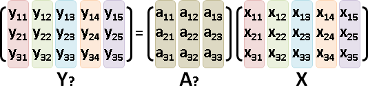YYᵀ = I。令新數據Y的維度是正規正交：相同維度的點積是1，相異維度的點積是0。既是單位向量、又互相垂直。
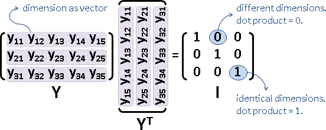一個維度視作一個向量；兩個向量的點積，得到一個值；所有兩兩向量的點積，排列成矩陣。
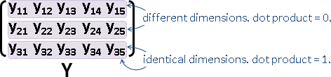推導過程
{ Y = AX
{ YYᵀ = I
given X. find A and Y.
_____________________________________________
YYᵀ = I | XXᵀ is a real matrix. |
AX(AX)ᵀ = I | XXᵀ is a square matrix. |
AXXᵀAᵀ = I | XXᵀ is a symmetric matrix. |
A(XXᵀ)Aᵀ = I | XXᵀ is a positive semi-definite. |
A(EDE⁻¹)Aᵀ = I | thus XXᵀ has real non-negative eigenvalues. |
A(E√D)(√DE⁻¹)Aᵀ = I | thus XXᵀ has orthonormal eigenbasis. |
A = √D⁻¹E⁻¹ | let XXᵀ = EDE⁻¹ (E⁻¹ = Eᵀ) |
A = √D⁻¹Eᵀ ‾‾‾‾‾‾‾‾‾‾‾‾‾‾‾‾‾‾‾‾‾‾‾‾‾‾‾‾‾‾‾‾‾‾‾‾‾‾‾‾‾‾‾‾‾
XXᵀ是實數對稱正半定方陣，得以實施特徵分解。
E是特徵向量們（特徵基底），恰為正規正交矩陣，其轉置矩陣恰為反矩陣。而且都是實數。
D是特徵值們，恰為對角線矩陣。而且都是實數、都非負數。
欲求A，就想辦法讓A和Aᵀ能夠抵消EDEᵀ，使之成為I。特徵基底求反矩陣，特徵值先開根號再求倒數，如此就湊出了A。
欲求Y，只消計算AX。
正確答案不只一種。特徵向量對調次序、顛倒方向，特徵值開根號時取正值、取負值，都是正確答案。
補充一下，正確答案的左邊乘上任意的正規正交矩陣，仍是正確答案。但由於這類答案並不實用，大家總是無視這類答案。
數據減去平均值
當X的中心（平均值）位於原點，則Y的中心也將位於原點。
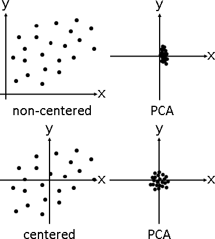大家總是預先將X減去平均值，將X的中心挪至原點。好處是：一、降低數值範圍，以減少浮點數運算誤差。二、具備直線擬合效果，詳見後面章節。
X減去平均值之後，XXᵀ和YYᵀ變成「維度的共變異矩陣」。
演算法（Eigendecomposition）
一、每筆數據減去其平均值。
二、求得維度之間（不是數據之間）的共變異矩陣。
三、共變異矩陣實施特徵分解。
X = {(1,2,3), (4,5,6), (5,0,4), (3,3,3), (7,5,9)}
[ 1 4 5 3 7 ] [ x₁ x₂ x₃ x₄ x₅ ] [ | | | | | ]
X = [ 2 5 0 3 5 ] = [ y₁ y₂ y₃ y₄ y₅ ] = [ p₁ p₂ p₃ p₄ p₅ ]
[ 3 6 4 3 9 ] [ z₁ z₂ z₃ z₄ z₅ ] [ | | | | | ]
[ 4 4 4 4 4 ]
X̄ = [ 3 3 3 3 3 ]
[ 5 5 5 5 5 ]
[ ] [ —— d₁ —— ]
X̂ = X - X̄ = [ 3 × 5 ] = [ —— d₂ —— ]
[ ] [ —— d₃ —— ]
[ d₁⋅d₁ d₁⋅d₂ d₁⋅d₃ ] [ ]
X̂ X̂ᵀ = [ d₂⋅d₁ d₂⋅d₂ d₂⋅d₃ ] = [ 3 × 3 ] = E D Eᵀ
[ d₃⋅d₁ d₃⋅d₁ d₃⋅d₃ ] [ ]
[ ] [ λ₁ 0 0 ]
E = [ 3 × 3 ] D = [ 0 λ₂ 0 ]
[ ] [ 0 0 λ₃ ]
[ 1/√λ₁ 0 0 ] [ ]
A = √D⁻¹ Eᵀ = [ 0 1/√λ₂ 0 ] [ 3 × 3 ]
[ 0 0 1/√λ₃ ] [ ]
演算法（Singular Value Decomposition）
X實施奇異值分解，恰好可以取代XXᵀ實施特徵分解。
X的奇異值、基底，恰好可以兜出XXᵀ的特徵值、特徵基底。
X = UΣVᵀ XXᵀ = UΣVᵀ(UΣVᵀ)ᵀ = UΣVᵀVΣᵀUᵀ = UΣΣᵀUᵀ = U(ΣΣᵀ)Uᵀ = EDEᵀ ΣΣᵀ = D, U = E
一般來說，實數對稱正半定方陣XXᵀ的特徵分解，比普通矩陣X的奇異值分解來得快。可是當X是超大矩陣的情況下，預先計算XXᵀ相當費時，而奇異值分解不必計算XXᵀ，逆轉勝。
演算法（EM-PCA）（Direct Linear Transformation）
Generate random matrix A. Loop over until A converge to PCA basis: E-step: X = A⁺Y = (A Aᵀ)⁻¹ Aᵀ Y M-step: A = Y X⁺ = X (XᵀX )⁻¹ Xᵀ
明明是Fixed Point Iteration，結果被叫做EM Algorithm。
我不清楚這是否比奇異值分解來的快。
幾何意義
PCA找到了全新的垂直座標軸：原點是數據中心、座標軸是特徵基底、座標軸單位長度是特徵值平方根。

所有數據一齊位移、旋轉（與鏡射）、縮放（與鏡射）。
一、位移：數據中心位移至原點。
二、旋轉：以特徵基底，逆向旋轉數據。
三、縮放：各維度除以各特徵值平方根。
最後，各維度的平均數均為0，變異數均為1。
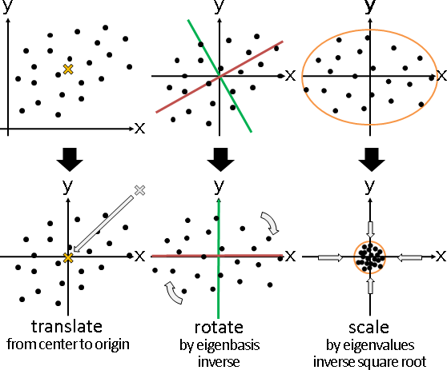正確答案不只一種。特徵向量（連同特徵值）對調次序，效果是鏡射暨旋轉。特徵向量顛倒方向、特徵值變號，效果是鏡射。
正確答案可以包含鏡射，也可以不包含鏡射。如果討厭鏡射，就讓特徵基底成為右手座標系、讓特徵值平方根皆是正值。
補充一下，正確答案的左邊乘上任意的正規正交矩陣，也就是旋轉（與鏡射），仍是正確答案。但由於這類答案並不實用，大家總是無視這類答案。
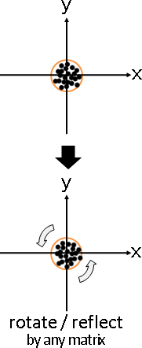讓特徵基底成為右手座標系
一、標準座標軸（單位矩陣I），是右手座標系。
二、右手座標系經過旋轉，仍是右手座標系。
三、偶數次鏡射，得視作旋轉。
四、右手座標系經過偶數次鏡射，仍是右手座標系。
五、右手座標系經過奇數次鏡射，若再增加一次鏡射，就是右手座標系。
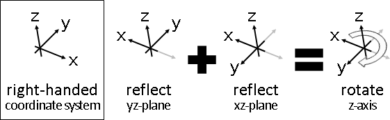determinant可以判斷鏡射次數。det(E) = +1是偶數次，det(E) = -1是奇數次。當det(E) = -1，則再增加一次鏡射，就是右手座標系。例如任取一個特徵向量顛倒方向（元素通通添上負號）。
幾何特性
一、所有數據投影到座標軸之後的變異數，第一座標軸最大，第二座標軸次大（須垂直於先前座標軸），……。
也就是說，座標軸的方向，就是數據最散開的方向。
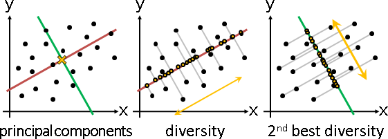二、所有數據到座標軸的距離平方和，第一座標軸最小，第二座標軸次小（須垂直於先前座標軸），……。此即直線擬合！
也就是說，座標軸的垂直方向，就是數據最聚合的方向。
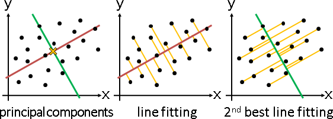座標軸總是穿越原點。當數據沒有預先減去平均值，則座標軸不會穿越數據中心，不過仍然具備前述性質。此即「必須穿越原點的直線擬合」！進一步改變原點，則可以製作「必須穿越任意點的直線擬合」。
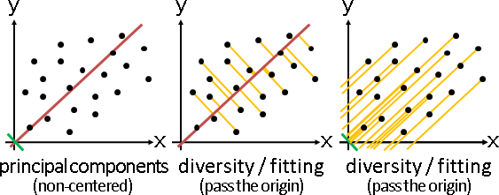數學證明
首先引入先備知識：Ax²求最大值、最小值。A是實數對稱正半定方陣。當x長度為1，答案是A的最大的、最小的特徵值暨特徵向量。
T 2
max x A x subject ‖x‖ = 1
x
T 2
max x A x - λ (‖x‖ - 1) Lagrange's multiplier
x
∂ T 2
―― [ x A x - λ (‖x‖ - 1) ] = 0 derivative = 0
∂x
2 A x - 2 λ x = 0 expand (A is symmetric)
A x = λ x transposition
A 最大的特徵值暨特徵向量就是正解。
投影之後變異數最大、數據散開性證明：
2
max ∑ ‖proj pᵢ - (1/n) ∑ proj pⱼ‖ subject to ‖v‖ = 1
v i v j v
2
max ∑ ‖proj pᵢ‖ subject to ‖v‖ = 1
v i v
2
max ∑ ‖pᵢ∙v‖ subject to ‖v‖ = 1
v i
T 2
max ∑ ‖pᵢ v‖ subject to ‖v‖ = 1
v i
T 2
max ‖X v‖ subject to ‖v‖ = 1
v
T T
max v X X v subject to ‖v‖ = 1
v
T T
max v (X X ) v subject to ‖v‖ = 1
v
T
X X 最大的特徵值暨特徵向量就是正解。
距離平方和最小、直線擬合、數據聚合性證明：
2
min ∑ ‖pᵢ - proj pᵢ‖ subject to ‖v‖ = 1
v i v
2
min ∑ ‖pᵢ - (pᵢ∙v) v‖ subject to ‖v‖ = 1
v i
2 2 2 2
min ∑ ‖pᵢ‖ - 2 ‖pᵢ∙v‖ + ‖pᵢ∙v‖ ‖v‖ subject to ‖v‖ = 1
v i
2 2
min ∑ ‖pᵢ‖ - ‖pᵢ∙v‖ subject to ‖v‖ = 1
v i
2
min ∑ - ‖pᵢ∙v‖ subject to ‖v‖ = 1
v i
2
max ∑ ‖pᵢ∙v‖ subject to ‖v‖ = 1
v i
T
X X 最大的特徵值暨特徵向量就是正解。
Low-rank Principal Component Analysis
關於轉換矩陣A，先前討論方陣，現在討論矩陣。low-rank是指矩陣的rank比較小，外觀看起來是直條不足或者橫條不足。
轉換矩陣不再擁有反矩陣，但是仍擁有廣義反矩陣，重新表示、分解仍是同一個問題。為了清楚說明，以下將兩者皆列出。
重新表示版本：令新數據維度小於原數據維度，降低資訊量。
答案是A = √D⁻¹Eᵀ，保留大的、捨棄小的特徵值暨特徵向量。
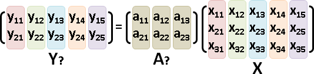分解版本：令原數據維度小於新數據維度，降低資訊量。
答案是A = E√D，保留大的、捨棄小的特徵值暨特徵向量。
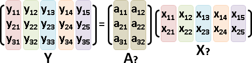如果式子再添加一個誤差項，稱作Factor Analysis。雞肋。
程式碼
幾何意義
PCA找到了一組新的垂直座標軸，而Low-rank PCA僅保留了特徵值較大的座標軸。
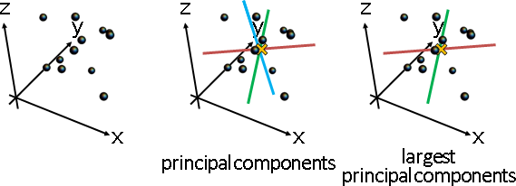所有數據一齊位移、投影（與鏡射）、縮放（與鏡射）。
因為捨棄了一些座標軸，所以旋轉必須重新解讀為投影：數據投影至僅存的特徵基底。
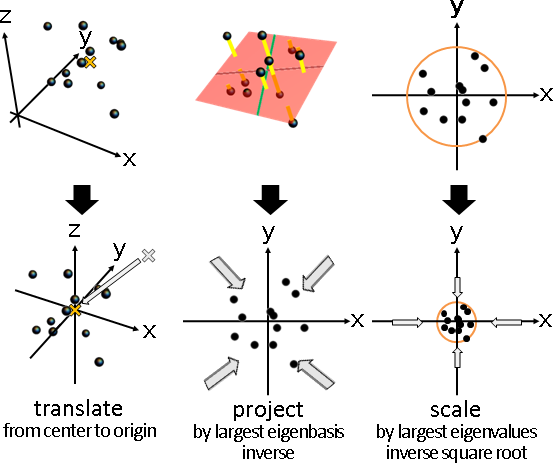p = RandomVariate[MultinormalDistribution[{0,0,0}, {{3,1,1},{1,2,1},{1,1,1}}], 12] / 3; ListPointPlot3D[p, PlotStyle -> PointSize[Large], BoxRatios->{1,1,1}]; p = {{-0.0561955,-0.00847422,0.453698},{-0.334564,-0.272408,-0.238724},{-0.567886,0.0607641,0.265588},{0.502573,-0.344719,-0.296151},{0.19767,0.450711,0.0407837},{-0.0795941,-0.316957,-0.129278},{0.388671,0.00273937,0.330277},{0.0718672,-0.0904262,0.213121},{0.0928513,-0.312574,0.213095},{0.0484546,0.251097,-0.522902},{0.0447417,0.575007,-0.0364518},{-0.308589,0.00523944,-0.293056}}; o = Mean[p]; p = p - Table[o, Length[p]]; e = Eigenvectors[N[Transpose[p] . p]]; normal = e[[3,All]]; q = p - (Dot[p, normal] * Table[normal, Length[p]]); l = Transpose[{p,q}]; pl = InfinitePlane[{0,0,0} , e[[1;;2,All]] ]; axis = {{{-2,0,0},{2,0,0}},{{0,-2,0},{0,2,0}},{{0,0,-2},{0,0,2}}}; Graphics3D[{Black, Thickness[0.015], Line[axis], Black, Specularity[White, 10], Sphere[p, 0.05], Thickness[0.025], CapForm["Butt"], RGBColor[255,192,0], Line[l], RGBColor[192,0,0], Opacity[0.5], EdgeForm[None], pl}, PlotRange -> {{-.6,.6},{-.6,.6},{-.6,.6}}, Boxed -> False] r = Transpose[{Dot[p, e[[1,All]]], Dot[p, e[[2,All]]]}]; Graphics[{Black, PointSize[0.05], Point[r]}, PlotRange -> {{-.6,.6},{-.6,.6},{-.6,.6}}, Boxed -> False]
幾何特性
除了先前提及的散開性、聚合性，又多了一個逼真性。
三、所有數據投影到座標軸空間的距離平方總和最小。
也就是說，座標軸所在位置，令數據投影之後的失真最少。
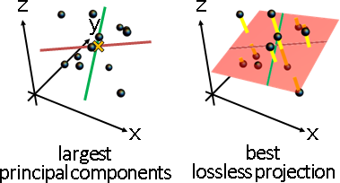數學證明
首先引入先備知識：對角線矩陣D，套用正規正交矩陣Q，trace只會減少，或者不變（當正規正交矩陣Q是單位矩陣I）。
幾何觀點：向量們形成標準座標軸，長度不必是1。經過旋轉或翻轉，則會偏離標準座標軸，使得座標值減少，總和也減少。
max tr( Q D ) 令 Q = I 以得到最大值
投影前後距離平方和最小、數據逼真性證明：
(Ǎ: remove some columns from square matrix A)
T 2 T
min ‖ X - B̌ B̌ X ‖ subject to B̌ B̌ = I
T T T
min tr( (X - B̌ B̌ X) (X - B̌ B̌ X) ) trace of inner product
T T T T T T
min tr( X X - 2 X B̌ B̌ X + X B̌ B̌ B̌ B̌ X ) expand
T T T T
min tr( X X - X B̌ B̌ X ) B̌ B̌ = I
T T
min tr( - X B̌ B̌ X ) remove constant
T T
max tr( X B̌ B̌ X ) multiply -1
T T
max tr( B̌ B̌ X X ) cyclic property of trace
T T
max tr( B̌ B̌ E D E ) eigendecomposition
T T
max tr( E B̌ B̌ E D ) cyclic property of trace
T T
令 E B̌ B̌ E = Ǐ 以得到最大值 Ď
令 B̌ = Ě 以得到最大值 Ď
T
X X 較大的特徵值和特徵向量就是正解。
精髓
從不同角度看數據，時聚時散。不斷滾動數據，重新找一個視角，讓數據看起來最散開、最聚合。注意到，是聚散，不是寬窄。
延伸應用
whitening：實施PCA，位移、旋轉、縮放。將數據範圍大致調整成單位圓，方便比對數據。觀念類似於normalization。
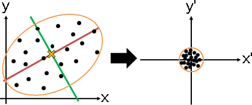orientation：實施PCA，位移、旋轉、略過縮放。功效是重設座標軸，擺正數據。
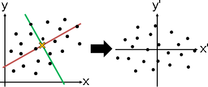alignment：兩堆數據各自實施PCA，特徵值由大到小排序，特徵向量一一對應，得知數據對應關係。
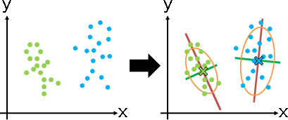embedding：實施Low-rank PCA，捨棄小的特徵值暨特徵向量，只做投影。功效是降維、壓縮，而且是誤差最小的方式。
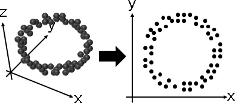